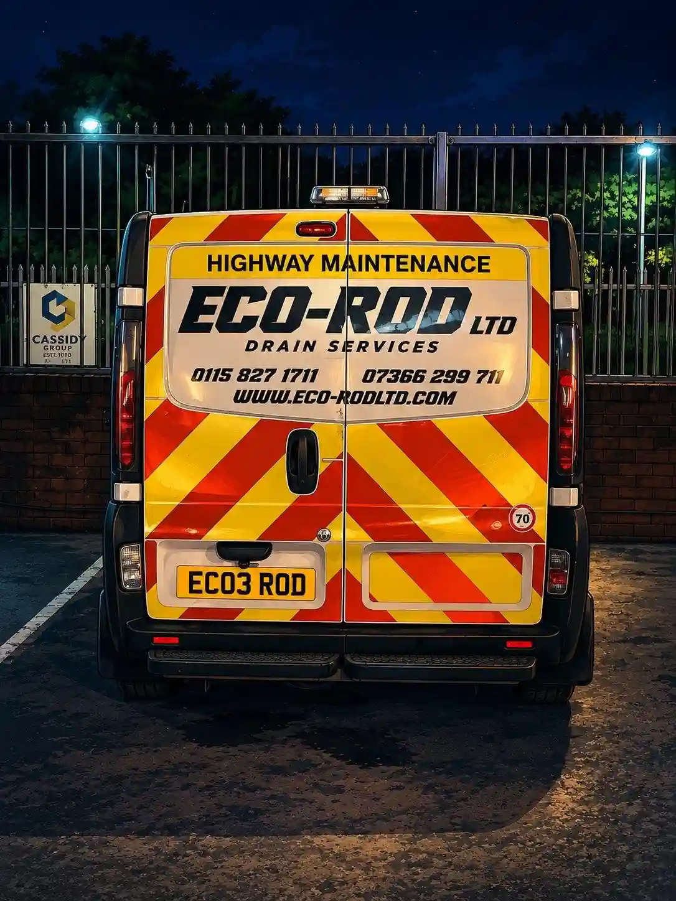

High Pressure Jetting Services in Nottingham, Derbyshire & Leicestershire
Stubborn blockage or heavy build up? We jet drains clear at homes and businesses across Nottingham, Derby, Leicester and Lincoln.
- Available 24/7
- Usually with you in 1 to 3 hours
- Domestic and commercial
- Fixed price agreed before we start
Powerful Drain Jetting for Tough Blockages
High pressure jetting sends a powerful stream of water through the drain to break up blockages and scour the pipe walls clean.
It clears grease, silt and debris that drain rods alone can't shift, and leaves the pipe much cleaner than rodding.

When Is Jetting the Right Choice?
We usually recommend jetting for:
- Grease blockages from kitchens
- Drains that keep blocking in the same place
- Silt and debris in outside drains
- Slow drains with heavy build up
- Cleaning a drain before a CCTV survey
For simple blockages close to the surface, drain rods are often enough. We'll use whichever method clears your drain properly.
What Can Jetting Clear?
- Fat, oil and grease Jetting breaks up hardened grease and flushes it along the pipe, which is why it suits commercial kitchens.
- Silt, sand and grit Heavy debris that settles in the bottom of outside drains is lifted and washed away.
- Scale and build up Years of soap and limescale on the pipe walls are scoured off, restoring the flow.
- Wipes and soft blockages Wipes and other soft blockages are broken up and pushed through.
- Recurring blockages If jetting keeps being needed, there may be a problem with the pipe itself. A CCTV drain survey will show it, and we can carry out any drain repairs needed.
How We Jet Your Drains
- Call us, day or night We're available 24/7, including evenings and weekends.
- We get to you fast We aim to be with you within the hour. At busy times it can take up to three hours, and we'll let you know when to expect us.
- We assess the drain We lift the covers to find where the blockage or build up is and check jetting is the right method.
- We confirm the price We agree a fixed price with you before any work starts.
- We jet the pipe We feed the jetting hose into the drain and work along the pipe until it runs clear.
- We test and clean up We run water through to check everything flows freely, then clean and disinfect the area before we leave.
Need a drain jetted today?
We're available 24/7. Call and we'll get an engineer on the way.
High Pressure Jetting Prices
The price depends on how long the drain run is and how much build up there is. We always agree it with you before we start.
Domestic and Commercial Drain Jetting
Homes
- Blocked and slow outside drains
- Kitchen drains with grease build up
- Landlords and letting agents
- Evening and weekend call-outs
Businesses
- Restaurants, takeaways and commercial kitchens
- Regular jetting to prevent closures
- Shops, offices and housing providers
- Clients include Burger King, KFC and Notts Fire & Rescue
Areas We Cover
We jet drains across Nottingham, Derby, Leicester and Lincoln, and the towns and villages around them. If you're not sure whether we cover your area, call us and we'll tell you.
High Pressure Jetting FAQs
Common questions about drain jetting.
What Our Customers Say
Rated 5 stars by 120+ customers on Google.
★★★★★
Absolutely fantastic service. Fixed price agreed in advance. Drain unblocked, jet washed and disinfected and all this at 7.30 on a Saturday. Thank you so much, would recommend to anyone
- Matthew Stenson
★★★★★
Really wonderful service. Woke up in the morning to a blocked drain and sorted by 3.15, 4 hours after calling, on Father’s Day too! Thank you
- C R
★★★★★
Amazing service, Ozzy replied almost immediately to my query and the next day the drain blockage was solved, great price and I would definitely go to Eco-Rod again if another issue occured.
- Shona Herring
Contact Us
Get in touch for a free, no-obligation quote. We respond fast.